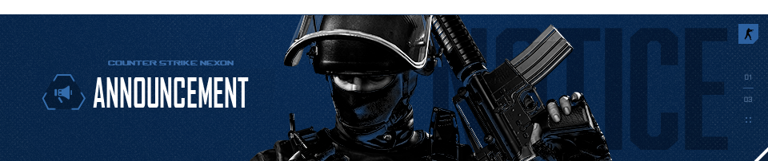

Announcement
- Counter Strike Nexon Indonesia Community
- Terakhir update: 3 Agustus 2025

Steam News
Update Patch (10 Juli 2025)
Weapon: Lycaon

Weapon: USAS12 Thunderfall

Update Patch (9 Juli 2025)
Weapon: Vortex Drill

Update Patch (25 Juni 2025)
Map: Dam
Update Patch (11 Juni 2025)
Weapon: Genocider I

Weapon: Genocider II

Weapon: Genocider II

Weapon: Genocider IV

Weapon: Genocider V

Weapon: Genocider VI

Update Patch (28 Mei 2025)
Weapon: Compound Bow Blank

Update Patch (14 Mei 2025)
Class: Amy
Class: Pablo
Medal: [Pink Angel]
Medal: [Perk Chaser]
Update Patch (16 April 2025)
Weapon: Abyss Repulsor

Medal: [Repulsor]
Update Patch (16 Maret 2025)
Weapon: Ascalon

Map: Bunker

Update Patch (19 Februari 2025)
Class: Champion Isabelle
Class: Headliner LingLing
Medal: [Girl Crush]
Map: The Hidden Truth | Zombie Scenario Season 9 Chapter 3
Update Patch (15 Januari 2025)
Frost Viper

Fire Fox

Star Forge

M4A1 Tyrant

AK47 Overlord

Bloodlord WarHammer